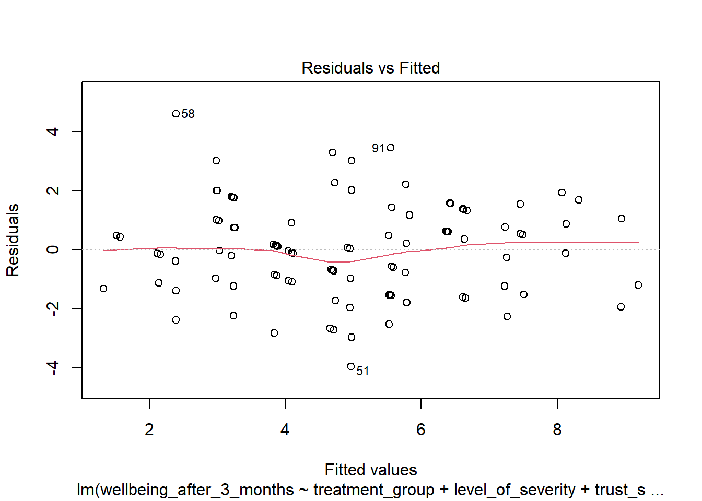
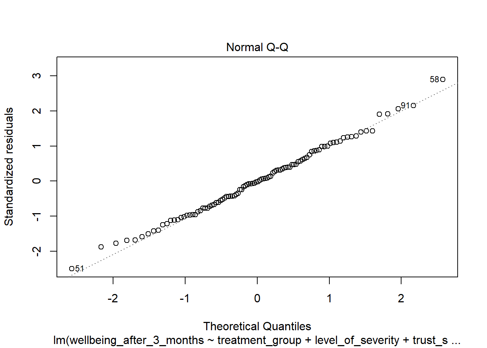
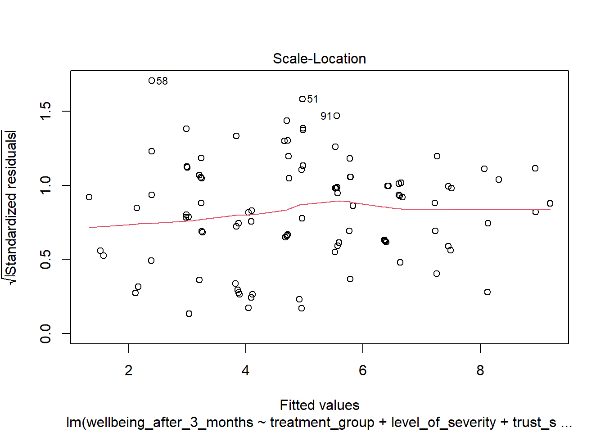
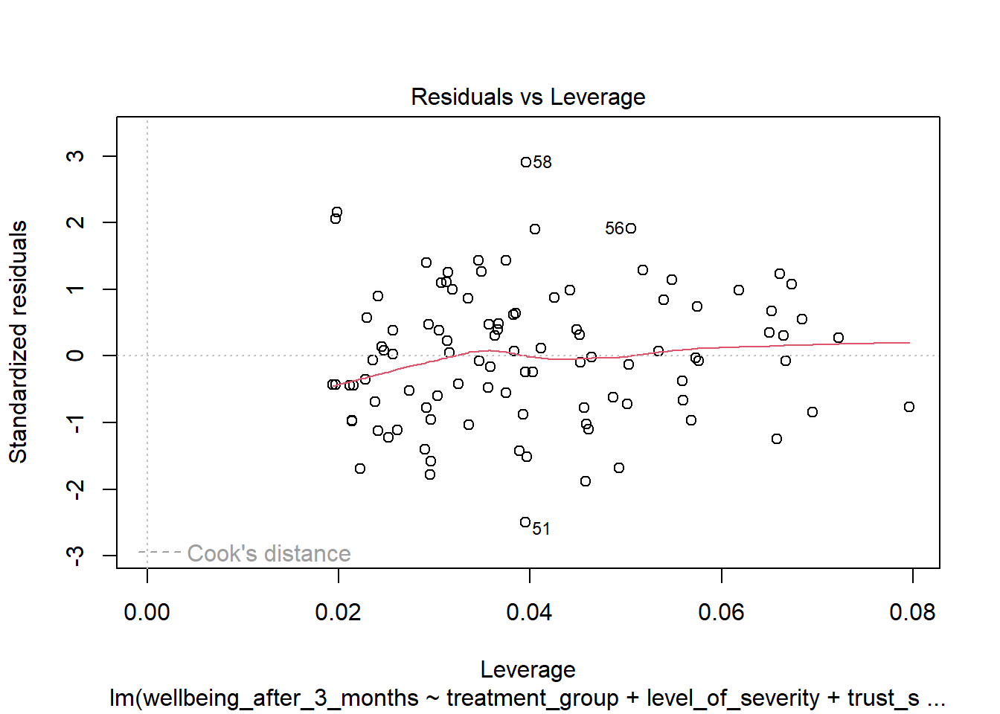

practical4_data <- read.csv("practical4_data.csv")Practical 4 Multiple Regression
How to approach this practical session
- Have RStudio open and ready to use.
- Be sure to read the contextual information and instructions carefully. This information is necessary to complete the tasks.
- Complete the tasks as you go along - they are labelled “Task”.
- Some of the code you need will be completed, some will be partially completed, some you will need to do yourself. You can copy code examples from this page by clicking on the clipboard icon which appears when you hover over the code examples.
- Buttons to press in your keyboard are shown like this:
Ctrl + S orCmd + S . - Menu items to click in R Studio are shown like this:
File -> Save . Panes or Tabs in R Studio are also shown like this:Environment . - On this page, boxes with a drop down arrow can be collapsed to hide the information inside them. You can also click on the arrow to expand the section.
Download the data for this practical
For this session you will need to download the following dataset: practical4_data.csv
Right click and select
Reminder: Importing data into R
To import data into R, you can use the a command that relates to the type of data you are importing. For example, to import the data in the file practical4_data.csv, you would use the following command:
You can also use the menu to import data. To do this, click on the
Import the data
Task
Import the data from the file practical4_data.csv into R. Save the data in a variable called practical3_data.
Check the data has been imported correctly
A clinical psychologist is interested in the effects of a treatment plan on the general wellbeing of clients. She is also interested in whether the level of severity of symptoms when entering treatment or the clients’ trust in the psychologist predict wellbeing.
The dataset contains 5 variables:
- client: an anonymous ID of the client
- treatment_group (control or therapy): Which treatment the client has been assigned to
- level_of_severity (1-20): A rating assigned by clinicians as to the severity of the client’s difficulties when they entered treatment (a computed value based on a battery of tests)
- trust_score (0-100): A rating by the client as to the level of trust they have in their psychologist based on their interaction to this point
- wellbeing_after_3_months (0-10): Client’s score on a psychometric measure of general wellbeing
Task
To answer the research questions outlined above, conduct the following analyses:
Calculate if there is a difference in the means of severity level, trust score and wellbeing after 3 months between the 2 treatment groups
Run a hierarchical multiple regression analysis comparing the following models (in each case, wellbeing after 3 months is the outcome). At this stage, check main effects only, not interactions:
- Model 0: Intercept only
- Model 1: treatment_group, severity_level
- Model 2: treatment_group, severity_level, trust_score
Check the assumption of multicoliniearity in Model 2
Use the plot() function to check other assumptions of Model 2
What conclusions can you draw from these analyses in relation to your research question?
# load packages
library(tidyverse) # for data manipulation and visualisation- 7
- The anova() function is used to compare the models. The function returns a table with the results of the comparison. The Pr(>F) column shows the p-value for each model. A p-value of less than 0.05 indicates that the model is significantly better than the previous model.
── Attaching core tidyverse packages ──────────────────────── tidyverse 2.0.0 ──
✔ dplyr 1.1.3 ✔ readr 2.1.4
✔ forcats 1.0.0 ✔ stringr 1.5.0
✔ ggplot2 3.4.3 ✔ tibble 3.2.1
✔ lubridate 1.9.3 ✔ tidyr 1.3.0
✔ purrr 1.0.2
── Conflicts ────────────────────────────────────────── tidyverse_conflicts() ──
✖ dplyr::filter() masks stats::filter()
✖ dplyr::lag() masks stats::lag()
ℹ Use the conflicted package (<http://conflicted.r-lib.org/>) to force all conflicts to become errorslibrary(mctest) # for multicollinearity
library(gvlma) # for checking assumptions
# 1. Calculate if there is a difference in the means of severity level, trust score and wellbeing after 3 months between the 2 treatment groups#
practical4_data |>
group_by(treatment_group) |>
summarise(mean_severity = mean(level_of_severity),
mean_trust = mean(trust_score),
mean_wellbeing = mean(wellbeing_after_3_months))
# 2. Run a hierarchical multiple regression analysis comparing the following models (in each case, wellbeing after 3 months is the outcome). At this stage, check main effects only, not interactions:#
# Model 0: Intercept only
model0 <- lm(wellbeing_after_3_months ~ 1, data = practical4_data)
model1 <- lm(wellbeing_after_3_months ~ treatment_group + level_of_severity, data = practical4_data)
model2 <- lm(wellbeing_after_3_months ~ treatment_group + level_of_severity + trust_score, data = practical4_data)
# 3. Check the assumptions (including multicoliniearity) in Model 2 #
mctest(model2, type = "b")
# 4. Use the plot() function to check other assumptions of Model 2 #
plot(model2)



# compare the models
7anova(model0, model1, model2)# A tibble: 2 × 4
treatment_group mean_severity mean_trust mean_wellbeing
<chr> <dbl> <dbl> <dbl>
1 control 10.1 51.1 4.83
2 therapy 9.60 48.9 5.04
Call:
omcdiag(mod = mod, Inter = Inter, detr = detr, red = red, conf = conf,
theil = theil, cn = cn)
Overall Multicollinearity Diagnostics
MC Results detection
Determinant |X'X|: 0.9551 0
Farrar Chi-Square: 4.4655 0
Red Indicator: 0.1246 0
Sum of Lambda Inverse: 3.0923 0
Theil's Method: -1.0482 0
Condition Number: 12.4801 0
1 --> COLLINEARITY is detected by the test
0 --> COLLINEARITY is not detected by the test
===================================
Call:
imcdiag(mod = mod, method = method, corr = FALSE, vif = vif,
tol = tol, conf = conf, cvif = cvif, ind1 = ind1, ind2 = ind2,
leamer = leamer, all = all)
All Individual Multicollinearity Diagnostics Result
VIF TOL Wi Fi Leamer CVIF Klein IND1
treatment_grouptherapy 1.0153 0.9849 0.7425 1.5003 0.9924 1.0494 0 0.0203
level_of_severity 1.0454 0.9566 2.1997 4.4447 0.9781 1.0805 0 0.0197
trust_score 1.0316 0.9693 1.5339 3.0994 0.9846 1.0663 0 0.0200
IND2
treatment_grouptherapy 0.5076
level_of_severity 1.4605
trust_score 1.0320
1 --> COLLINEARITY is detected by the test
0 --> COLLINEARITY is not detected by the test
treatment_grouptherapy , trust_score , coefficient(s) are non-significant may be due to multicollinearity
R-square of y on all x: 0.5687
* use method argument to check which regressors may be the reason of collinearity
===================================
Analysis of Variance Table
Model 1: wellbeing_after_3_months ~ 1
Model 2: wellbeing_after_3_months ~ treatment_group + level_of_severity
Model 3: wellbeing_after_3_months ~ treatment_group + level_of_severity +
trust_score
Res.Df RSS Df Sum of Sq F Pr(>F)
1 99 583.64
2 97 251.79 2 331.85 63.2753 <2e-16 ***
3 96 251.74 1 0.05 0.0188 0.8911
---
Signif. codes: 0 '***' 0.001 '**' 0.01 '*' 0.05 '.' 0.1 ' ' 1
Task
Save your script.
You are done for today
Further resources for hierarchical regression